Switching actuators product description
Switching actuators (relay) are KNX devices. The bus is connected via a bus terminal block. The switching actuators can switch resistive loads (e.g. electrical heaters, incandescent lamps, high voltage halogen lamps), inductive loads (e.g. motor, low voltage halogen lamps with intermediate conventional transformers), or capacitive loads (e.g. low voltage halogen lamps with intermediate electronic transformers).
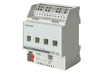 | N 530D31, Switching actuator, 4 x AC 230 V, 6 AX N 532D31, Switching actuator, 4 x AC 230 V, 10 AX N 534D31, Switching actuator, 4 x AC 230 V, 16/20 AX Download data sheet: www.siemens.com/gamma-td | 5WG1 530-1DB31 5WG1 532-1DB31 5WG1 534-1DB31 |
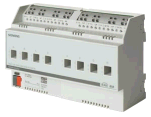 | N 530D51, Switching actuator, 8 x AC 230 V, 6 AX N 532D51, Switching actuator, 8 x AC 230 V, 10 AX N 534D51, Switching actuator, 8 x AC 230 V, 16/20 AX Download data sheet: www.siemens.com/gamma-td | 5WG1 530-1DB51 5WG1 532-1DB51 5WG1 534-1DB51 |
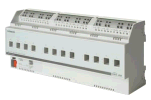 | N 530D61, Switching actuator, 12 x AC 230 V, 6 AX N 532D61, Switching actuator, 12 x AC 230 V, 10 AX N 534D61, Switching actuator, 12 x AC 230 V, 16/20 AX Download data sheet: www.siemens.com/gamma-td | 5WG1 530-1DB61 5WG1 532-1DB61 5WG1 534-1DB61 |
N 535, Switching actuator, 8 x AC 230 V, 16/20 AX Load detection with load check threshold monitoring Download data sheet: www.siemens.com/gamma-td | 5WG1 535-1DB51
|
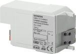 | RL 512/23, Switching actuator (relay)
Order number: 5WG1 512-4AB23 Download data sheet: 5WG15124AB23 |
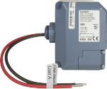 | JB 512C23, Switching actuator (relay)
Order number: 5WG1 512-4CB23 Download data sheet: 5WG15124CB23 |
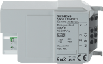 | RL 513/23, Switching actuator (relay)
Order number: 5WG1 513-4DB23 Download data sheet: 5WG15134DB23 |
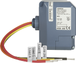 | JB 513C23, Binary output (relay)
Order number: 5WG1 513-4CB23 Download data sheet: 5WG15134CB23 |
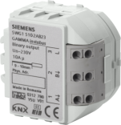 | RS 510/23, Binary output (relay)
Order number: 5WG1 510-2AB23 Download data sheet: 5WG15102AB23 |
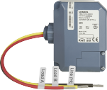 | JB 510C23, Binary output (relay)
Order number: 5WG1 510-4CB23 Download data sheet: 5WG15104CB23 |
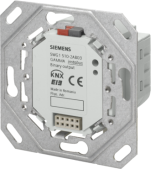 | UP 510/03, Binary output (relay) with mounting frame
Order number: 5WG1 510-2AB03 Download data sheet: 5WG15102AB03 |
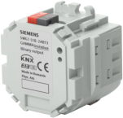 | UP 510/13, Binary output (relay)
Order number: 5WG1 510-2AB13 Download data sheet: 5WG15102AB13 |